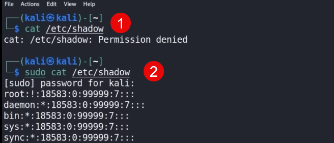

In earlier version of Kali Linux we ran as a user called root(root is the administrator of the machine)
now we run as a user called kali; i.e we don't have have administratvie rights directly.
how to run commands as an elevated privildge?
sudo: Super User Do
sudo let you run a command as root!
example of a file that cannot be accessed without elevated permission:
sudo cat /etc/shadow

switch user to root
sudo su -